19.7 简单类型¶
这是专用于PresentationML 的简单类型的完整列表。
Simple Types
This is the complete list of simple types dedicated to PresentationML.
19.7.1 ST_BookmarkIdSeed (书签 ID 种子)¶
此简单类型指定书签 ID 种子值的约束。
此简单类型的内容是 W3C XML Schema unsignedInt 数据类型的限制。
这个简单类型还指定了以下限制：
- 此简单类型的最小值大于或等于 1。
- 此简单类型的最大值小于 2147483648。
[Note: 此简单类型的内容模型 (ST_BookmarkIdSeed) 的 W3C XML 架构定义位于 §A.3 中。 end note]
ST_BookmarkIdSeed (Bookmark ID Seed)
This simple type specifies constraints for value of the Bookmark ID seed.
This simple type's contents are a restriction of the W3C XML Schema unsignedInt datatype.
This simple type also specifies the following restrictions:
- This simple type has a minimum value of greater than or equal to 1.
- This simple type has a maximum value of less than 2147483648.
[Note: The W3C XML Schema definition of this simple type’s content model (ST_BookmarkIdSeed) is located in §A.3. end note]
19.7.2 ST_Direction (方向)¶
这种简单类型定义水平或垂直方向。
此简单类型的内容是 W3C XML 架构令牌数据类型的限制。
此简单类型仅限于下表中列出的值：
| 枚举值 | 描述 |
|---|---|
| horz (水平的) | 定义水平方向。 |
| vert (垂直的) | 定义垂直方向。 |
[Note: 此简单类型的内容模型 (ST_Direction) 的 W3C XML 架构定义位于 §A.3 中。 end note]
ST_Direction (Direction)
This simple type defines a direction of either horizontal or vertical.
This simple type's contents are a restriction of the W3C XML Schema token datatype.
This simple type is restricted to the values listed in the following table:
| Enumeration Value | Description |
|---|---|
| horz (Horizontal) | Defines a horizontal direction. |
| vert (Vertical) | Defines a vertical direction. |
[Note: The W3C XML Schema definition of this simple type’s content model (ST_Direction) is located in §A.3. end note]
19.7.3 ST_Index (索引)¶
这个简单的类型定义了对象在有序列表中的位置。
此简单类型的内容是 W3C XML Schema unsignedInt 数据类型的限制。
[Note: 此简单类型的内容模型 (ST_Index) 的 W3C XML 架构定义位于 §A.3 中。 end note]
ST_Index (Index)
This simple type defines the position of an object in an ordered list.
This simple type's contents are a restriction of the W3C XML Schema unsignedInt datatype.
[Note: The W3C XML Schema definition of this simple type’s content model (ST_Index) is located in §A.3. end note]
19.7.4 ST_IterateType (迭代类型)¶
这个简单类型指定如何将动画应用到目标元素的子元素上。
此简单类型的内容是 W3C XML 架构令牌数据类型的限制。
此简单类型仅限于下表中列出的值：
| 枚举值 | 描述 |
|---|---|
| el (元素) | 按元素迭代。 |
| lt (字母) | 按字母迭代。 |
| wd (字) | 按 字 进行迭代。 |
[Note: 此简单类型的内容模型 (ST_IterateType) 的 W3C XML 架构定义位于 §A.3 中。 end note]
ST_IterateType (Iterate Type)
This simple type specifies how the animation is applied over subelements of the target element.
This simple type's contents are a restriction of the W3C XML Schema token datatype.
This simple type is restricted to the values listed in the following table:
| Enumeration Value | Description |
|---|---|
| el (Element) | Iterate by element. |
| lt (Letter) | Iterate by Letter. |
| wd (Word) | Iterate by Word. |
[Note: The W3C XML Schema definition of this simple type’s content model (ST_IterateType) is located in §A.3. end note]
19.7.5 ST_Name (名称字符串)¶
这种简单类型指定一个名称，例如评论作者或自定义节目的名称。
此简单类型的内容是 W3C XML 架构字符串数据类型的限制。
[Note: 此简单类型的内容模型 (ST_Name) 的 W3C XML 架构定义位于 §A.3 中。 end note]
ST_Name (Name string)
This simple type specifies a name, such as for a comment author or custom show.
This simple type's contents are a restriction of the W3C XML Schema string datatype.
[Note: The W3C XML Schema definition of this simple type’s content model (ST_Name) is located in §A.3. end note]
19.7.6 ST_OleObjectFollowColorScheme (遵循配色方案的嵌入对象)¶
此简单类型确定嵌入对象是否重新着色以反映配色方案的更改。
此简单类型的内容是 W3C XML 架构令牌数据类型的限制。
此简单类型仅限于下表中列出的值：
| 枚举值 | 描述 |
|---|---|
| full (全部) | 设置此枚举会导致嵌入对象响应演示文稿中颜色方案的所有更改. |
| none (无) | 设置此枚举会导致嵌入对象不响应演示文稿中颜色方案的更改. |
| textAndBackground (文字和背景) | 设置此枚举会导致嵌入对象仅响应演示文稿中配色方案的文本和背景颜色的更改。 |
[Note: 此简单类型的内容模型 (ST_OleObjectFollowColorScheme) 的 W3C XML 架构定义位于 §A.3 中。 end note]
ST_OleObjectFollowColorScheme (Embedded object to Follow Color Scheme)
This simple type determines if the Embedded object is re-colored to reflect changes to the color schemes.
This simple type's contents are a restriction of the W3C XML Schema token datatype.
This simple type is restricted to the values listed in the following table:
| Enumeration Value | Description |
|---|---|
| full (Full) | Setting this enumeration causes the Embedded object to respond to all changes in the color scheme in the presentation. |
| none (None) | Setting this enumeration causes the Embedded object to not respond to changes in the color scheme in the presentation. |
| textAndBackground (Text and Background) | Setting this enumeration causes the Embedded object to respond only to changes in the text and background colors of the color scheme in the presentation. |
[Note: The W3C XML Schema definition of this simple type’s content model (ST_OleObjectFollowColorScheme) is located in §A.3. end note]
19.7.7 ST_PhotoAlbumFrameShape (相片遮罩的相册形状)¶
这个简单的类型指定相册演示中相框类型的值。
此简单类型的内容是 W3C XML 架构令牌数据类型的限制。
此简单类型仅限于下表中列出的值：
| 枚举值 | 描述 |
|---|---|
| frameStyle1 (长方形相框) |

|
| frameStyle2 (圆角矩形相框) | |
| frameStyle3 (简单的白色相框) |

|
| frameStyle4 (简单的黑色相框) |

|
| frameStyle5 (复合黑色相框) | 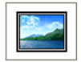 |
| frameStyle6 (中心阴影相框) | |
| frameStyle7 (软边相框) |
{kind=link}
{kind=link}
{kind=link}
{kind=link}
[Note: 此简单类型的内容模型 (ST_PhotoAlbumFrameShape) 的 W3C XML 架构定义位于 §A.3 中。 end note]
ST_PhotoAlbumFrameShape (Photo Album Shape for Photo Mask)
This simple type specifies the values for photo frame types within a photo album presentation.
This simple type's contents are a restriction of the W3C XML Schema token datatype.
This simple type is restricted to the values listed in the following table:
[Note: The W3C XML Schema definition of this simple type’s content model (ST_PhotoAlbumFrameShape) is located in §A.3. end note]
19.7.8 ST_PhotoAlbumLayout (相册布局定义)¶
这个简单的类型指定相册演示文稿中照片布局的值。
此简单类型的内容是 W3C XML 架构令牌数据类型的限制。
此简单类型仅限于下表中列出的值：
| 枚举值 | 描述 |
|---|---|
| 1pic (每张幻灯片 1 张照片) |
 指定相册幻灯片应有一张图片，在没有标题的幻灯片上水平和垂直居中。
指定相册幻灯片应有一张图片，在没有标题的幻灯片上水平和垂直居中。
|
| 1picTitle (每张幻灯片 1 张照片（带标题）) |
 指定相册幻灯片应有一张图片和一个标题文本框，在幻灯片上水平和垂直居中。
指定相册幻灯片应有一张图片和一个标题文本框，在幻灯片上水平和垂直居中。
|
| 2pic (每张幻灯片 2 张照片) | 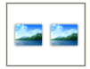 指定相册幻灯片应包含两张大小相同的图片，并排放置，水平和垂直居中，幻灯片上没有标题。 |
| 2picTitle (每张幻灯片 2 张照片（带标题）) |
 指定相册幻灯片应包含两张尺寸相同的图片，并排放置，单个标题文本框位于它们上方，在幻灯片上水平和垂直地共同居中。
指定相册幻灯片应包含两张尺寸相同的图片，并排放置，单个标题文本框位于它们上方，在幻灯片上水平和垂直地共同居中。
|
| 4pic (每张幻灯片 4 张照片) | 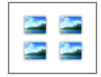 指定相册幻灯片应有四张相同大小的图片，位于二乘二的矩阵中，水平和垂直居中，位于没有标题的幻灯片上。 |
| 4picTitle (每张幻灯片 4 张照片（带标题）) |
 指定相册幻灯片应包含四张相同大小的图片，放置在二乘二的矩阵中，单个标题文本框位于矩阵上方，在幻灯片上水平和垂直居中。
指定相册幻灯片应包含四张相同大小的图片，放置在二乘二的矩阵中，单个标题文本框位于矩阵上方，在幻灯片上水平和垂直居中。
|
| fitToSlide (适合幻灯片的照片) | 指定相册幻灯片应该有一张图片，拉伸以适合整个幻灯片大小，没有标题. |
{kind=link}
{kind=link}
{kind=link}
[Note: 此简单类型的内容模型 (ST_PhotoAlbumLayout) 的 W3C XML 架构定义位于 §A.3 中。 end note]
ST_PhotoAlbumLayout (Photo Album Layout Definition)
This simple type specifies the values for photo layouts within a photo album presentation.
This simple type's contents are a restriction of the W3C XML Schema token datatype.
This simple type is restricted to the values listed in the following table:
[Note: The W3C XML Schema definition of this simple type’s content model (ST_PhotoAlbumLayout) is located in §A.3. end note]
19.7.9 ST_PlaceholderSize (占位符大小)¶
这种简单的类型有助于存储占位符的大小。 该尺寸是相对于母版上的正文占位符来描述的。
此简单类型的内容是 W3C XML 架构令牌数据类型的限制。
此简单类型仅限于下表中列出的值：
| 枚举值 | 描述 |
|---|---|
| full (全部) | 指定占位符应采用母版上正文占位符的完整大小。 |
| half (一半) | 指定占位符应采用母版上主体占位符大小的一半。 垂直或水平半尺寸？ 需要一张图片。 |
| quarter (四分之一) | 指定占位符应采用母版上正文占位符大小的四分之一。 图片会有帮助 |
[Note: 此简单类型的内容模型 (ST_PlaceholderSize) 的 W3C XML 架构定义位于 §A.3 中。 end note]
ST_PlaceholderSize (Placeholder Size)
This simple type facilitates the storing of the size of the placeholder. This size is described relative to the body placeholder on the master.
This simple type's contents are a restriction of the W3C XML Schema token datatype.
This simple type is restricted to the values listed in the following table:
| Enumeration Value | Description |
|---|---|
| full (Full) | Specifies that the placeholder should take the full size of the body placeholder on the master. |
| half (Half) | Specifies that the placeholder should take the half size of the body placeholder on the master. Half size vertically or horizontally? Needs a picture. |
| quarter (Quarter) | Specifies that the placeholder should take a quarter of the size of the body placeholder on the master. Picture would be helpful |
[Note: The W3C XML Schema definition of this simple type’s content model (ST_PlaceholderSize) is located in §A.3. end note]
19.7.10 ST_PlaceholderType (占位符 ID)¶
这种简单的类型有助于存储占位符应包含的内容类型。
[Note: 某些占位符类型不适用于所有 SlideBase 类型. end note]
此简单类型的内容是 W3C XML 架构Token数据类型的限制.
此简单类型仅限于下表中列出的值：
| 枚举值 | 描述 |
|---|---|
| body (正文) | 包含正文。 允许幻灯片、幻灯片布局、幻灯片母版、注释、注释母版。 幻灯片和幻灯片布局可以是水平或垂直的。 |
| chart (图表) | 包含图表或图形。 特种。 允许幻灯片和幻灯片布局。 |
| clipArt (剪贴画) | 包含单个剪贴画图像。 特种。 允许幻灯片和幻灯片布局。 |
| ctrTitle (居中标题) | 包含旨在位于幻灯片中央的标题。 允许幻灯片和幻灯片布局。 |
| dgm (绘制/diagram) | 包含绘制，特别的类型，允许幻灯片和幻灯片布局。 |
| dt (日期和时间) | 包含日期和时间。 允许幻灯片、幻灯片布局、幻灯片母版、注释、注释母版、讲义母版 |
| ftr (页脚) | 包含要在文档中用作页脚的文本。 允许幻灯片、幻灯片布局、幻灯片母版、注释、注释母版、讲义母版 |
| hdr (标头) | 包含用作文档标题的文本。 允许用于笔记、笔记大师、讲义大师。 |
| media (多媒体) | 包含多媒体内容，例如音频或影片剪辑。 特种。 允许幻灯片和幻灯片布局。 |
| obj (对象) | 包含任何内容类型。 特种。 允许幻灯片和幻灯片布局。 |
| pic (图片) | 包含一张图片。 特种。 允许幻灯片和幻灯片布局。 |
| sldImg (幻灯片图像) | 包含幻灯片的图像。 允许用于注释和注释大师。 |
| sldNum (幻灯片编号) | 包含幻灯片的编号。 允许幻灯片、幻灯片布局、幻灯片母版、注释、注释母版、讲义母版 |
| subTitle (副标题) | 包含副标题。 允许幻灯片和幻灯片布局。 |
| tbl (表格) | 包含一个表。 特别的类型。 允许幻灯片和幻灯片布局。 |
| title (标题) | 包含幻灯片标题。 允许用于幻灯片、幻灯片布局和幻灯片母版。 幻灯片和幻灯片布局可以是水平或垂直的。 |
[Note: 此简单类型的内容模型 (ST_PlaceholderType) 的 W3C XML 架构定义位于 §A.3 中。 end note]
ST_PlaceholderType (Placeholder IDs)
This simple type facilitates the storing of the content type a placeholder should contain.
[Note: Some placeholder types are not allowed for all SlideBase types. end note]
This simple type's contents are a restriction of the W3C XML Schema token datatype.
This simple type is restricted to the values listed in the following table:
| Enumeration Value | Description |
|---|---|
| body (Body) | Contains body text. Allowed for Slide, Slide Layout, Slide Master, Notes, Notes Master. Can be horizontal or vertical on Slide and Slide Layout. |
| chart (Chart) | Contains a chart or graph. Special type. Allowed for Slide and Slide Layout. |
| clipArt (Clip Art) | Contains a single clip art image. Special type. Allowed for Slide and Slide Layout. |
| ctrTitle (Centered Title) | Contains a title intended to be centered on the slide. Allowed for Slide and Slide Layout. |
| dgm (Diagram) | Contains a diagram. Special type. Allowed for Slide and Slide Layout. |
| dt (Date and Time) | Contains the date and time. Allowed for Slide, Slide Layout, Slide Master, Notes, Notes Master, Handout Master |
| ftr (Footer) | Contains text to be used as a footer in the document. Allowed for Slide, Slide Layout, Slide Master, Notes, Notes Master, Handout Master |
| hdr (Header) | Contains text to be used as a header for the document. Allowed for Notes, Notes Master, Handout Master . |
| media (Media) | Contains multimedia content such as audio or a movie clip. Special type. Allowed for Slide and Slide Layout. |
| obj (Object) | Contains any content type. Special type. Allowed for Slide and Slide Layout. |
| pic (Picture) | Contains a picture. Special type. Allowed for Slide and Slide Layout. |
| sldImg (Slide Image) | Contains an image of the slide. Allowed for Notes and Notes Master. |
| sldNum (Slide Number) | Contains the number of a slide. Allowed for Slide, Slide Layout, Slide Master, Notes, Notes Master, Handout Master |
| subTitle (Subtitle) | Contains a subtitle. Allowed for Slide and Slide Layout. |
| tbl (Table) | Contains a table. Special type. Allowed for Slide and Slide Layout. |
| title (Title) | Contains a slide title. Allowed for Slide, Slide Layout and Slide Master. Can be horizontal or vertical on Slide and Slide Layout. |
[Note: The W3C XML Schema definition of this simple type’s content model (ST_PlaceholderType) is located in §A.3. end note]
19.7.11 ST_PrintColorMode (打印色彩模式)¶
此简单类型指定打印演示文稿文档时应使用的颜色模式。
此简单类型的内容是 W3C XML 架构令牌数据类型的限制。
此简单类型仅限于下表中列出的值：
| 枚举值 | 描述 |
|---|---|
| bw (黑白模式) | 打印只能是黑白的 |
| clr (色彩模式) | 打印应为全彩 |
| gray (灰度模式) | 打印只能是灰度 |
[Note: 此简单类型的内容模型 (ST_PrintColorMode) 的 W3C XML 架构定义位于 §A.3 中。 end note]
ST_PrintColorMode (Print Color Mode)
This simple type specifies the color mode that should be used when printing a presentation document.
This simple type's contents are a restriction of the W3C XML Schema token datatype.
This simple type is restricted to the values listed in the following table:
| Enumeration Value | Description |
|---|---|
| bw (Black and White Mode) | Print should be in Black and White only |
| clr (Color Mode) | Print should be in Full Color |
| gray (Grayscale Mode) | Print should be in Grayscale only |
[Note: The W3C XML Schema definition of this simple type’s content model (ST_PrintColorMode) is located in §A.3. end note]
19.7.12 ST_PrintWhat (默认打印输出)¶
这个简单的类型指定打印时应使用的默认打印布局
此简单类型的内容是 W3C XML 架构令牌数据类型的限制。
此简单类型仅限于下表中列出的值：
| 枚举值 | 描述 |
|---|---|
| handouts1 (1 张幻灯片/讲义页) | 1 幻灯片和讲义 应使用的页面布局。 |
| handouts2 (2 幻灯片/讲义页) | 2 幻灯片和讲义 应使的用页面布局。 |
| handouts3 (3 幻灯片/讲义页) | 3 幻灯片和讲义 应使的用页面布局。 |
| handouts4 (4 幻灯片/讲义页) | 4 幻灯片和讲义 应使的用页面布局。 |
| handouts6 (6 幻灯片/讲义页) | 6 幻灯片和讲义 应使的用页面布局。 |
| handouts9 (9 幻灯片/讲义页) | 9 幻灯片和讲义 应使的用页面布局。 |
| notes (笔记) | 应使用的注释布局。 |
| outline (大纲) | 应使用的大纲布局。 |
| slides (幻灯片) | 幻灯片应使用的布局 |
[Note: 此简单类型的内容模型 (ST_PrintWhat) 的 W3C XML 架构定义位于 §A.3 中。 end note]
ST_PrintWhat (Default print output)
This simple type specifies the default print layout that should be used when printing
This simple type's contents are a restriction of the W3C XML Schema token datatype.
This simple type is restricted to the values listed in the following table:
| Enumeration Value | Description |
|---|---|
| handouts1 (1 Slide / Handout Page) | 1 Slide and Handout Page layout should be used. |
| handouts2 (2 Slide / Handout Page) | 2 Slide and Handout Page layout should be used. |
| handouts3 (3 Slide / Handout Page) | 3 Slide and Handout Page layout should be used. |
| handouts4 (4 Slide / Handout Page) | 4 Slides and Handout Page layout should be used. |
| handouts6 (6 Slide / Handout Page) | 6 Slides and Handout Page layout should be used. |
| handouts9 (9 Slide / Handout Page) | 9 Slides and Handout Page layout should be used. |
| notes (Notes) | Notes layout should be used. |
| outline (Outline) | Outline layout should be used. |
| slides (Slides) | Slides layout should be used. |
[Note: The W3C XML Schema definition of this simple type’s content model (ST_PrintWhat) is located in §A.3. end note]
19.7.13 ST_SlideId (幻灯片标识符)¶
这个简单类型指定幻灯片标识符允许的编号。
此简单类型的内容是 W3C XML Schema unsignedInt 数据类型的限制。
这个简单类型还指定了以下限制：
- 此简单类型的最大值小于 2147483648。
- 此简单类型的最小值大于或等于 256。
[Note: 此简单类型的内容模型 (ST_SlideId) 的 W3C XML 架构定义位于 §A.3 中。 end note]
ST_SlideId (Slide Identifier)
This simple type specifies the allowed numbering for the slide identifier.
This simple type's contents are a restriction of the W3C XML Schema unsignedInt datatype.
This simple type also specifies the following restrictions:
- This simple type has a maximum value of less than 2147483648.
- This simple type has a minimum value of greater than or equal to 256.
[Note: The W3C XML Schema definition of this simple type’s content model (ST_SlideId) is located in §A.3. end note]
19.7.14 ST_SlideLayoutId (幻灯片布局 ID)¶
这个简单的类型设置幻灯片布局 id 值的范围。 该布局 ID 用于识别不同的幻灯片布局设计.
此简单类型的内容是 W3C XML Schema unsignedInt 数据类型的限制。
这个简单类型还指定了以下限制：
- 此简单类型的最小值大于或等于 2147483648.
[Note: 此简单类型的内容模型 (ST_SlideLayoutId) 的 W3C XML 架构定义位于 §A.3 中。 end note]
ST_SlideLayoutId (Slide Layout ID)
This simple type sets the bounds for the slide layout id value. This layout id is used to identify the different slide layout designs.
This simple type's contents are a restriction of the W3C XML Schema unsignedInt datatype.
This simple type also specifies the following restrictions:
- This simple type has a minimum value of greater than or equal to 2147483648.
[Note: The W3C XML Schema definition of this simple type’s content model (ST_SlideLayoutId) is located in §A.3. end note]
19.7.15 ST_SlideLayoutType (幻灯片布局类型)¶
这种简单的类型定义了幻灯片上内容的排列。 每种布局类型并不与占位符的精确位置相关，而是提供内容类型和占位符位置的高级描述。 应用程序可以使用此信息来帮助在不同布局之间进行映射。 应用程序可以选择通过其用户界面使用这些布局中的哪一个（如果有）。
每个布局包含零个或多个占位符，每个占位符都有特定的内容类型。 “对象”占位符可以包含任何类型的数据。 媒体占位符用于保存视频或音频剪辑。 枚举值描述包括简单类型的每个值的示例布局的图示。
此简单类型的内容是 W3C XML 架构令牌数据类型的限制。
此简单类型仅限于下表中列出的值：
| 枚举值 | 描述 |
|---|---|
| blank (幻灯片布局类型枚举（空白）) | 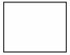 Blank |
| chart (Chart) |
 标题和图表
标题和图表
|
| chartAndTx (幻灯片布局类型枚举（图表和文本）) | 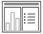 标题、图表在左边，文字在右边 |
| clipArtAndTx (剪贴画和文本) |
 标题，左边是剪贴画，右边是文字
标题，左边是剪贴画，右边是文字
|
| clipArtAndVertTx (剪贴画和垂直文本) | 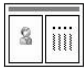 标题，左侧为剪贴画，右侧为垂直文本 |
| cust (幻灯片布局类型枚举（自定义）) | 用户定义的自定义布局 |
| dgm (幻灯片布局类型枚举（图表/diagram）) |
 标题和图表
标题和图表
|
| fourObj (四个对象) | 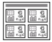 标题和四个对象 |
| mediaAndTx (幻灯片布局类型枚举（媒体和文本）) |
 标题和四个对象
标题和四个对象
|
| obj (标题和对象) |
 标题和对象
标题和对象
|
| objAndTwoObj (对象和两个对象) |
 标题，左侧 1 个对象，右侧 2 个对象
标题，左侧 1 个对象，右侧 2 个对象
|
| objAndTx (幻灯片布局类型枚举（对象和文本）) |
 标题、对象在左边，文本在右边
标题、对象在左边，文本在右边
|
| objOnly (对象) |
 仅对象
仅对象
|
| objOverTx (幻灯片布局类型枚举（对象优于文本）) | 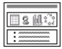 标题、对象在顶部、文本在底部 |
| objTx (标题、对象和说明) |
 标题、对象和说明文本
标题、对象和说明文本
|
| picTx (图片和说明文字) |
 标题、图片和说明文字
标题、图片和说明文字
|
| secHead (节标题) |
 节标题和副标题文本
节标题和副标题文本
|
| tbl (幻灯片布局类型枚举（表格）) |
 标题和表格
标题和表格
|
| title (幻灯片布局类型枚举（标题）) | 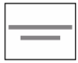 具有居中标题和副标题占位符的标题布局 |
| titleOnly (幻灯片布局类型枚举（仅限标题）) | 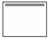 仅标题 |
| twoColTx (幻灯片布局类型枚举（两列文本）) |
 标题、文字在左、文字在右
标题、文字在左、文字在右
|
| twoObj (两个物体) |
 标题、左侧对象、右侧对象
标题、左侧对象、右侧对象
|
| twoObjAndObj (两个对象和对象) | 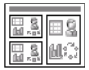 标题，左侧两个对象，右侧一个对象 |
| twoObjAndTx (两个对象和文本) |
 标题，左侧两个对象，右侧文本
标题，左侧两个对象，右侧文本
|
| twoObjOverTx (文本上的两个对象) |
 标题，两个对象在顶部，文本在底部
标题，两个对象在顶部，文本在底部
|
| twoTxTwoObj (两个文本和两个对象) |
 标题，两个对象，每个对象都有文本
标题，两个对象，每个对象都有文本
|
| tx (幻灯片布局类型枚举（文本）) |
 标题和文字
标题和文字
|
| txAndChart (幻灯片布局类型枚举（文本和图表）) |
 标题、文字在左边，图表在右边
标题、文字在左边，图表在右边
|
| txAndClipArt (文本和剪贴画) |
 标题、文字在左，剪贴画在右
标题、文字在左，剪贴画在右
|
| txAndMedia (幻灯片布局类型枚举（文本和媒体）) | 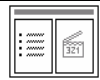 标题、文字在左，媒体在右 |
| txAndObj (幻灯片布局类型枚举（文本和对象）) | 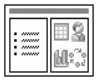 标题、文字在左，对象在右 |
| txAndTwoObj (文本和两个对象) | 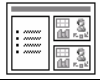 标题、文本在左侧，两个对象在右侧 |
| txOverObj (幻灯片布局类型枚举（对象上的文本）) |
 标题、文本在顶部，对象在底部
标题、文本在顶部，对象在底部
|
| vertTitleAndTx (垂直标题和文本) | 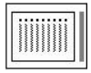 右侧垂直标题，左侧垂直文本 |
| vertTitleAndTxOverChart (图表上的垂直标题和文本) | 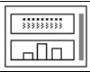 垂直标题在右侧，垂直文本在顶部，图表在底部 |
| vertTx (竖排文字) |
 标题和垂直文本正文
标题和垂直文本正文
|
{kind=link}
{kind=link}
{kind=link}
{kind=link}
{kind=link}
{kind=link}
{kind=link}
{kind=link}
{kind=link}
{kind=link}
{kind=link}
{kind=link}
{kind=link}
[Note: 此简单类型的内容模型 (ST_SlideLayoutType) 的 W3C XML 架构定义位于 §A.3 中。 end note]
ST_SlideLayoutType (Slide Layout Type)
This simple type defines an arrangement of content on a slide. Each layout type is not tied to an exact positioning of placeholders, but rather provides a higher-level description of the content type and positioning of placeholders. This information can be used by the application to aid in mapping between different layouts. The application can choose which, if any, of these layouts to make available through its user interface.
Each layout contains zero or more placeholders, each with a specific content type. An "object" placeholder can contain any kind of data. Media placeholders are intended to hold video or audio clips. The enumeration value descriptions include illustrations of sample layouts for each value of the simple type.
This simple type's contents are a restriction of the W3C XML Schema token datatype.
This simple type is restricted to the values listed in the following table:
[Note: The W3C XML Schema definition of this simple type’s content model (ST_SlideLayoutType) is located in §A.3. end note]
19.7.16 ST_SlideMasterId (幻灯片母版 ID)¶
此简单类型指定幻灯片母版标识符允许的编号。
此简单类型的内容是 W3C XML Schema unsignedInt 数据类型的限制。
这个简单类型还指定了以下限制：
- 此简单类型的最小值大于或等于 2147483648。
[Note: 此简单类型的内容模型 (ST_SlideMasterId) 的 W3C XML 架构定义位于 §A.3 中。 end note]
ST_SlideMasterId (Slide Master ID)
This simple type specifies the allowed numbering for the slide master identifier.
This simple type's contents are a restriction of the W3C XML Schema unsignedInt datatype.
This simple type also specifies the following restrictions:
- This simple type has a minimum value of greater than or equal to 2147483648.
[Note: The W3C XML Schema definition of this simple type’s content model (ST_SlideMasterId) is located in §A.3. end note]
19.7.17 ST_SlideSizeCoordinate (幻灯片大小坐标)¶
此简单类型指定 EMU（英制公制单位）中的幻灯片大小坐标。
此简单类型的内容是 ST_PositiveCooperative32 数据类型 (§20.1.10.43) 的限制。
这个简单类型还指定了以下限制：
- 此简单类型的最大值小于或等于 51206400。
- 此简单类型的最小值大于或等于 914400。
[Note: 此简单类型的内容模型 (ST_SlideSizeCooperative) 的 W3C XML 架构定义位于 §A.3 中。 end note]
ST_SlideSizeCoordinate (Slide Size Coordinate)
This simple type specifies the slide size coordinate in EMUs (English Metric Units).
This simple type's contents are a restriction of the ST_PositiveCoordinate32 datatype (§20.1.10.43).
This simple type also specifies the following restrictions:
- This simple type has a maximum value of less than or equal to 51206400.
- This simple type has a minimum value of greater than or equal to 914400.
[Note: The W3C XML Schema definition of this simple type’s content model (ST_SlideSizeCoordinate) is located in §A.3. end note]
19.7.18 ST_SlideSi zeType (幻灯片尺寸类型)¶
此简单类型指定应优化幻灯片的幻灯片大小类型。
此简单类型的内容是 W3C XML 架构令牌数据类型的限制。
此简单类型仅限于下表中列出的值：
| 枚举值 | 描述 |
|---|---|
| 35mm (35mm Film) | 应针对 35 毫米胶片输出优化幻灯片尺寸 |
| A3 (A3) | 应针对 A3 输出优化幻灯片尺寸 |
| A4 (A4) | 应针对 A4 输出优化幻灯片尺寸 |
| B4ISO (B4ISO) | 应针对 B4ISO 输出优化幻灯片大小 |
| B4JIS (B4JIS) | 应针对 B4JIS 输出优化幻灯片大小 |
| B5ISO (B5ISO) | 应针对 B5ISO 输出优化幻灯片尺寸 |
| B5JIS (B5JIS) | 应针对 B5JIS 输出优化幻灯片大小 |
| banner (Banner) | 应针对横幅输出优化幻灯片大小 |
| custom (Custom) | 应针对自定义输出优化幻灯片大小 |
| hagakiCard (Hagaki Card) | 应针对 hagaki 卡输出优化幻灯片大小 |
| ledger (Ledger) | 应针对账本输出优化幻灯片大小 |
| letter (Letter) | 应针对字母输出优化幻灯片大小 |
| overhead (Overhead) | 幻灯片大小应针对开销输出进行优化 |
| screen16x10 (Screen 16x10) | 幻灯片大小应针对 16x10 屏幕输出进行优化 |
|
screen16x9 (Screen 16x9) |
幻灯片大小应针对 16x9 屏幕输出进行优化 |
| screen4x3 (Screen 4x3) | 幻灯片大小应针对 4x3 屏幕输出进行优化 |
[Note: 此简单类型的内容模型 (ST_SlideSizeType) 的 W3C XML 架构定义位于 §A.3 中。 end note]
ST_SlideSizeType (Slide Size Type)
This simple type specifies the kind of slide size that the slide should be optimized for.
This simple type's contents are a restriction of the W3C XML Schema token datatype.
This simple type is restricted to the values listed in the following table:
| Enumeration Value | Description |
|---|---|
| 35mm (35mm Film) | Slide size should be optimized for 35mm film output |
| A3 (A3) | Slide size should be optimized for A3 output |
| A4 (A4) | Slide size should be optimized for A4 output |
| B4ISO (B4ISO) | Slide size should be optimized for B4ISO output |
| B4JIS (B4JIS) | Slide size should be optimized for B4JIS output |
| B5ISO (B5ISO) | Slide size should be optimized for B5ISO output |
| B5JIS (B5JIS) | Slide size should be optimized for B5JIS output |
| banner (Banner) | Slide size should be optimized for banner output |
| custom (Custom) | Slide size should be optimized for custom output |
| hagakiCard (Hagaki Card) | Slide size should be optimized for hagaki card output |
| ledger (Ledger) | Slide size should be optimized for ledger output |
| letter (Letter) | Slide size should be optimized for letter output |
| overhead (Overhead) | Slide size should be optimized for overhead output |
| screen16x10 (Screen 16x10) | Slide size should be optimized for 16x10 screen output |
|
screen16x9 (Screen 16x9) |
Slide size should be optimized for 16x9 screen output |
| screen4x3 (Screen 4x3) | Slide size should be optimized for 4x3 screen output |
[Note: The W3C XML Schema definition of this simple type’s content model (ST_SlideSizeType) is located in §A.3. end note]
19.7.19 ST_SplitterBarState (分离条状态)¶
此简单类型指定分隔条应显示的状态。分隔条将查看区域内的主要区域和次要区域分开。
此简单类型的内容是 W3C XML 架构令牌数据类型的限制。
此简单类型仅限于下表中列出的值：
| 枚举值 | 描述 |
|---|---|
| maximized (Max) | 主要区域占据应用程序允许的最大查看区域。 |
| minimized (Min) | 主要区域占据应用程序允许的最小查看区域。 |
| restored (Restored) | 主要区域具有特定的中间尺寸。 |
[Note: 此简单类型的内容模型 (ST_SplitterBarState) 的 W3C XML 架构定义位于 §A.3. end note]
ST_SplitterBarState (Splitter Bar State)
This simple type specifies the state that the splitter bar should be shown in. The splitter bar separates a primary and secondary region within a viewing area.
This simple type's contents are a restriction of the W3C XML Schema token datatype.
This simple type is restricted to the values listed in the following table:
| Enumeration Value | Description |
|---|---|
| maximized (Max) | The primary region occupies the greatest amount of the viewing area allowed by the application. |
| minimized (Min) | The primary region occupies the least amount of the viewing area allowed by the application. |
| restored (Restored) | The primary region has a specific intermediate size. |
[Note: The W3C XML Schema definition of this simple type’s content model (ST_SplitterBarState) is located in §A.3. end note]
19.7.20 ST_TLAnimateBehaviorCalcMode (时间列表动画行为计算模式)¶
这个简单的类型指定动画如何从一个点流动到另一个点。
此简单类型的内容是 W3C XML 架构令牌数据类型的限制。
此简单类型仅限于下表中列出的值：
| 枚举值 | 描述 |
|---|---|
| discrete (Calc Mode Enum ( Discrete )) | 描述 |
| fmla (Calc Mode Enum ( Formula )) | 公式 |
| lin (Calc Mode Enum ( Linear )) | 线性 |
[Note: 此简单类型的内容模型 (ST_TLAnimateBehaviorCalcMode) 的 W3C XML 架构定义位于 §A.3 中。 end note]
ST_TLAnimateBehaviorCalcMode (Time List Animate Behavior Calculate Mode)
This simple type specifies how the animation flows from point to point.
This simple type's contents are a restriction of the W3C XML Schema token datatype.
This simple type is restricted to the values listed in the following table:
| Enumeration Value | Description |
|---|---|
| discrete (Calc Mode Enum ( Discrete )) | Descrete |
| fmla (Calc Mode Enum ( Formula )) | Formula |
| lin (Calc Mode Enum ( Linear )) | Linear |
[Note: The W3C XML Schema definition of this simple type’s content model (ST_TLAnimateBehaviorCalcMode) is located in §A.3. end note]
19.7.21 ST_TLAnimateBehaviorValueType (时间列表动画行为值类型)¶
这个简单类型指定属性值的类型。
此简单类型的内容是 W3C XML 架构令牌数据类型的限制。
此简单类型仅限于下表中列出的值：
| 枚举值 | 描述 |
|---|---|
| clr (Value Type Enum ( Color )) | 颜色 |
| num (Value Type Enum ( Number )) | 数字 |
| str (Value Type Enum ( String )) | 字符串 |
[Note: The W3C XML Schema definition of this simple type’s content model (ST_TLAnimateBehaviorValueType) is located in §A.3. end note]
ST_TLAnimateBehaviorValueType (Time List Animate Behavior Value Types)
This simple type specifies the type of property value.
This simple type's contents are a restriction of the W3C XML Schema token datatype.
This simple type is restricted to the values listed in the following table:
| Enumeration Value | Description |
|---|---|
| clr (Value Type Enum ( Color )) | Color |
| num (Value Type Enum ( Number )) | Number |
| str (Value Type Enum ( String )) | String |
[Note: The W3C XML Schema definition of this simple type’s content model (ST_TLAnimateBehaviorValueType) is located in §A.3. end note]
19.7.22 ST_TLAnimateColorDirection (时间列表动画颜色方向)¶
此简单类型指定插入动画的方向（顺时针或逆时针）。
此简单类型的内容是 W3C XML 架构令牌数据类型的限制。
此简单类型仅限于下表中列出的值：
| 枚举值 | 描述 |
|---|---|
| ccw (Counter-Clockwise) | 逆时针 |
| cw (Direction Enum ( Clockwise )) | 顺时针 |
[Note: 此简单类型的内容模型 (ST_TLAnimateColorDirection) 的 W3C XML 架构定义位于 §A.3 中。 end note]
ST_TLAnimateColorDirection (Time List Animate Color Direction)
This simple type specifies the direction in which to interpolate the animation (clockwise or counterclockwise).
This simple type's contents are a restriction of the W3C XML Schema token datatype.
This simple type is restricted to the values listed in the following table:
| Enumeration Value | Description |
|---|---|
| ccw (Counter-Clockwise) | Counter-Clockwise |
| cw (Direction Enum ( Clockwise )) | Clockwise |
[Note: The W3C XML Schema definition of this simple type’s content model (ST_TLAnimateColorDirection) is located in §A.3. end note]
19.7.23 ST_TLAnimateColorSpace (时间列表动画色彩空间)¶
这个简单的类型指定动画的色彩空间。
此简单类型的内容是 W3C XML 架构令牌数据类型的限制。
此简单类型仅限于下表中列出的值：
| 枚举值 | 描述 |
|---|---|
| hsl (Color Space Enum ( HSL )) | 色相、饱和度、亮度 |
| rgb (Color Space Enum ( RGB )) | 红、绿、蓝 |
[Note: 此简单类型的内容模型 (ST_TLAnimateColorSpace) 的 W3C XML 架构定义位于 §A.3 中。 end note]
ST_TLAnimateColorSpace (Time List Animate Color Space)
This simple type specifies the color space of the animation.
This simple type's contents are a restriction of the W3C XML Schema token datatype.
This simple type is restricted to the values listed in the following table:
| Enumeration Value | Description |
|---|---|
| hsl (Color Space Enum ( HSL )) | Hue, Saturation, Luminance |
| rgb (Color Space Enum ( RGB )) | Red, Green, Blue |
[Note: The W3C XML Schema definition of this simple type’s content model (ST_TLAnimateColorSpace) is located in §A.3. end note]
19.7.24 ST_TLAnimateEffectTransition (时间列表动画效果过渡)¶
这个简单类型指定效果是过渡入、过渡出还是两者都不是。
此简单类型的内容是 W3C XML 架构令牌数据类型的限制。
此简单类型仅限于下表中列出的值：
| 枚举值 | 描述 |
|---|---|
| in (Transition Enum ( In )) | 进入 |
| none (Transition Enum ( None )) | 无 |
| out (Transition Enum ( Out )) | 退出 |
[Note: 此简单类型的内容模型 (ST_TLAnimateEffectTransition) 的 W3C XML 架构定义位于 §A.3 中。 end note]
ST_TLAnimateEffectTransition (Time List Animate Effect Transition)
This simple type specifies whether the effect is a transition in, transition out, or neither.
This simple type's contents are a restriction of the W3C XML Schema token datatype.
This simple type is restricted to the values listed in the following table:
| Enumeration Value | Description |
|---|---|
| in (Transition Enum ( In )) | In |
| none (Transition Enum ( None )) | None |
| out (Transition Enum ( Out )) | Out |
[Note: The W3C XML Schema definition of this simple type’s content model (ST_TLAnimateEffectTransition) is located in §A.3. end note]
19.7.25 ST_TLAnimateMotionBehaviorOrigin (时间列表动画动作行为起源)¶
这个简单的类型指定运动路径的原点相对于什么。
此简单类型的内容是 W3C XML 架构令牌数据类型的限制。
此简单类型仅限于下表中列出的值：
| 枚举值 | 描述 |
|---|---|
| layout (Origin Enum ( Layout )) | Layout |
| parent (Origin Enum ( Parent )) | Parent |
[Note: 此简单类型的内容模型 (ST_TLAnimateMotionBehaviorOrigin) 的 W3C XML 架构定义位于 §A.3 中。 end note]
ST_TLAnimateMotionBehaviorOrigin (Time List Animate Motion Behavior Origin)
This simple type specifies what the origin of the motion path is relative to.
This simple type's contents are a restriction of the W3C XML Schema token datatype.
This simple type is restricted to the values listed in the following table:
| Enumeration Value | Description |
|---|---|
| layout (Origin Enum ( Layout )) | Layout |
| parent (Origin Enum ( Parent )) | Parent |
[Note: The W3C XML Schema definition of this simple type’s content model (ST_TLAnimateMotionBehaviorOrigin) is located in §A.3. end note]
19.7.26 ST_TLAnimateMotionPathEditMode (时间列表动画运动路径编辑模式)¶
这个简单类型指定当目标元素移动时运动路径如何移动。
此简单类型的内容是 W3C XML 架构令牌数据类型的限制。
此简单类型仅限于下表中列出的值：
| 枚举值 | 描述 |
|---|---|
| fixed (Path Edit Mode Enum ( Fixed )) | 固定的 |
| relative (Path Edit Mode Enum ( Relative )) | 相对的 |
[Note: 此简单类型的内容模型 (ST_TLAnimateMotionPathEditMode) 的 W3C XML 架构定义位于 §A.3 中。 end note]
ST_TLAnimateMotionPathEditMode (Time List Animate Motion Path Edit Mode)
This simple type specifies how the motion path moves when the target element is moved.
This simple type's contents are a restriction of the W3C XML Schema token datatype.
This simple type is restricted to the values listed in the following table:
| Enumeration Value | Description |
|---|---|
| fixed (Path Edit Mode Enum ( Fixed )) | Fixed |
| relative (Path Edit Mode Enum ( Relative )) | Relative |
[Note: The W3C XML Schema definition of this simple type’s content model (ST_TLAnimateMotionPathEditMode) is located in §A.3. end note]
19.7.27 ST_TLBehaviorAccumulateType (行为累积型)¶
当设置为“始终”时，这种简单的类型会在每次迭代时构建重复的动画。
此简单类型的内容是 W3C XML 架构令牌数据类型的限制。
此简单类型仅限于下表中列出的值：
| 枚举值 | 描述 |
|---|---|
| always (Accumulate Enum ( Always )) | 总是 |
| none (Accumulate Enum ( None )) | 无 |
[Note: 此简单类型的内容模型 (ST_TLBehaviorAccumulateType) 的 W3C XML 架构定义位于 §A.3. end note]
ST_TLBehaviorAccumulateType (Behavior Accumulate Type)
This simple type makes a repeating animation build with each iteration when set to "always."
This simple type's contents are a restriction of the W3C XML Schema token datatype.
This simple type is restricted to the values listed in the following table:
| Enumeration Value | Description |
|---|---|
| always (Accumulate Enum ( Always )) | Always |
| none (Accumulate Enum ( None )) | None |
[Note: The W3C XML Schema definition of this simple type’s content model (ST_TLBehaviorAccumulateType) is located in §A.3. end note]
19.7.28 ST_TLBehaviorAdditiveType (行为添加剂类型)¶
这个简单类型指定如何将动画值应用到属性的原始值。
此简单类型的内容是 W3C XML 架构令牌数据类型的限制。
此简单类型仅限于下表中列出的值：
| 枚举值 | 描述 |
|---|---|
| base (Additive Enum ( Base )) | 基础 |
| mult (Additive Enum ( Multiply )) | 乘 |
| none (None) | 无 |
| repl (Additive Enum ( Replace )) | 替换 |
| sum (Additive Enum ( Sum )) | 和 |
[Note: 此简单类型的内容模型 (ST_TLBehaviorAdditiveType) 的 W3C XML 架构定义位于 §A.3 中。 end note]
ST_TLBehaviorAdditiveType (Behavior Additive Type)
This simple type specifies how to apply the animation values to the original value for the property.
This simple type's contents are a restriction of the W3C XML Schema token datatype.
This simple type is restricted to the values listed in the following table:
| Enumeration Value | Description |
|---|---|
| base (Additive Enum ( Base )) | Base |
| mult (Additive Enum ( Multiply )) | Multiply |
| none (None) | None |
| repl (Additive Enum ( Replace )) | Replace |
| sum (Additive Enum ( Sum )) | Sum |
[Note: The W3C XML Schema definition of this simple type’s content model (ST_TLBehaviorAdditiveType) is located in §A.3. end note]
19.7.29 ST_TLBehaviorOverrideType (行为覆盖类型)¶
这个简单类型指定行为应如何覆盖目标元素上动画的属性值。 “childStyle”清除目标元素中包含的子元素的属性。
此简单类型的内容是 W3C XML 架构令牌数据类型的限制。
此简单类型仅限于下表中列出的值：
| 枚举值 | 描述 |
|---|---|
| childStyle (Override Enum ( Child Style )) | 子元素风格 |
| normal (Override Enum ( Normal )) | 常规 |
[Note: 此简单类型的内容模型 (ST_TLBehaviorOverrideType) 的 W3C XML 架构定义位于 §A.3 中。 end note]
ST_TLBehaviorOverrideType (Behavior Override Type)
This simple type specifies how a behavior should override values of the attribute being animated on the target element. The "childStyle" clears the attributes on the children contained inside the target element.
This simple type's contents are a restriction of the W3C XML Schema token datatype.
This simple type is restricted to the values listed in the following table:
| Enumeration Value | Description |
|---|---|
| childStyle (Override Enum ( Child Style )) | Child Style |
| normal (Override Enum ( Normal )) | Normal |
[Note: The W3C XML Schema definition of this simple type’s content model (ST_TLBehaviorOverrideType) is located in §A.3. end note]
19.7.30 ST_TLBehaviorTransformType (行为转变类型)¶
这个简单类型指定行为如何为目标元素设置动画。
此简单类型的内容是 W3C XML 架构令牌数据类型的限制
此简单类型仅限于下表中列出的值：
| 枚举值 | 描述 |
|---|---|
| img (Image) | 图像变换 |
| pt (Point) | 点变换 |
[Note: The W3C XML Schema definition of this simple type’s content model (ST_TLBehaviorTransformType) is located in §A.3. end note]
ST_TLBehaviorTransformType (Behavior Transform Type)
This simple type specifies how the behavior animates the target element.
This simple type's contents are a restriction of the W3C XML Schema token datatype
This simple type is restricted to the values listed in the following table:
| Enumeration Value | Description |
|---|---|
| img (Image) | Image transform |
| pt (Point) | Point transform |
[Note: The W3C XML Schema definition of this simple type’s content model (ST_TLBehaviorTransformType) is located in §A.3. end note]
19.7.31 ST_TLChartSubelementType (图表子元素类型)¶
此简单类型定义由图表的子元素表示的动画目标元素。
此简单类型的内容是 W3C XML 架构令牌数据类型的限制。
此简单类型仅限于下表中列出的值：
| 枚举值 | 描述 |
|---|---|
| category (类别轴) | 类别 |
| gridLegend (网格图例) | 背景元素（网格和图例） |
| ptInCategory (类别中的单点) | 类别元素 |
| ptInSeries (数据系列中的单点) | 系列元素 |
| series (数据系列) | 系列 |
[Note: 此简单类型的内容模型 (ST_TLChartSubelementType) 的 W3C XML 架构定义位于 §A.3 中。 end note]
ST_TLChartSubelementType (Chart Subelement Type)
This simple type defines an animation target element that is represented by a subelement of a chart.
This simple type's contents are a restriction of the W3C XML Schema token datatype.
This simple type is restricted to the values listed in the following table:
| Enumeration Value | Description |
|---|---|
| category (Category Axis) | Category |
| gridLegend (Grid Legend) | Background Element (Grid and Legend) |
| ptInCategory (Single Point in Category) | Category Element |
| ptInSeries (Single Point in Data Series) | Series Element |
| series (Data Series) | Series |
[Note: The W3C XML Schema definition of this simple type’s content model (ST_TLChartSubelementType) is located in §A.3. end note]
19.7.32 ST_TLCommandType (图表子元素类型)¶
这个简单类型指定命令类型。
此简单类型的内容是 W3C XML 架构令牌数据类型的限制。
此简单类型仅限于下表中列出的值：
| 枚举值 | 描述 |
|---|---|
| call (命令类型枚举 ( Call )) | 调用 |
| evt (命令类型枚举 ( Event )) | 事件 |
| verb (命令类型枚举 ( Verb )) | 变量 |
[Note: 此简单类型的内容模型 (ST_TLCommandType) 的 W3C XML 架构定义位于 §A.3 中。 end note]
ST_TLCommandType (Command Type)
This simple type specifies a command type.
This simple type's contents are a restriction of the W3C XML Schema token datatype.
This simple type is restricted to the values listed in the following table:
| Enumeration Value | Description |
|---|---|
| call (Command Type Enum ( Call )) | Call |
| evt (Command Type Enum ( Event )) | Event |
| verb (Command Type Enum ( Verb )) | Verb |
[Note: The W3C XML Schema definition of this simple type’s content model (ST_TLCommandType) is located in §A.3. end note]
19.7.33 ST_TLDiagramBuildType (图表构建类型)¶
这个简单的类型指定了不同的图表构建类型。
此简单类型的内容是 W3C XML 架构令牌数据类型的限制。
此简单类型仅限于下表中列出的值：
| 枚举值 | 描述 |
|---|---|
| allAtOnce (图构建类型枚举 ( All At Once )) | 一次全部 |
| breadthByLvl (图构建类型枚举 ( Breadth By Level )) | Breadth By Level |
| breadthByNode (图构建类型枚举 ( Breadth By Node )) | Breadth By Node |
| ccw (图构建类型枚举 ( Counter-Clockwise )) | Counter-Clockwise |
| ccwIn (图构建类型枚举 ( Counter-ClockwiseIn )) | Counter-Clockwise-In |
| ccwOut (图构建类型枚举 ( CounterClockwise-Out )) | Counter-Clockwise-Out |
| cust (图构建类型枚举 ( Custom )) | Custom |
| cw (图构建类型枚举 ( Clockwise )) | Clockwise |
| cwIn (图构建类型枚举 ( Clockwise-In )) | Clockwise-In |
| cwOut (图构建类型枚举 ( Clockwise-Out )) | Clockwise-Out |
| depthByBranch (图构建类型枚举 ( Depth By Branch )) | Depth By Branch |
| depthByNode (图构建类型枚举 ( Depth By Node )) | Depth By Node |
| down (图构建类型枚举 ( Down )) | Down |
| inByRing (图构建类型枚举 ( In-By-Ring )) | In-By-Ring |
| outByRing (图构建类型枚举 ( Out-By-Ring )) | Out-By-Ring |
| up (图构建类型枚举 ( Up )) | Up |
| whole (图构建类型枚举 ( Whole )) | Whole |
[Note: 此简单类型的内容模型 (ST_TLDiagramBuildType) 的 W3C XML 架构定义位于 §A.3 中。 end note]
ST_TLDiagramBuildType (Diagram Build Types)
This simple type specifies the different diagram build types.
This simple type's contents are a restriction of the W3C XML Schema token datatype.
This simple type is restricted to the values listed in the following table:
| Enumeration Value | Description |
|---|---|
| allAtOnce (Diagram Build Type Enum ( All At Once )) | All At Once |
| breadthByLvl (Diagram Build Type Enum ( Breadth By Level )) | Breadth By Level |
| breadthByNode (Diagram Build Type Enum ( Breadth By Node )) | Breadth By Node |
| ccw (Diagram Build Type Enum ( Counter-Clockwise )) | Counter-Clockwise |
| ccwIn (Diagram Build Type Enum ( Counter-ClockwiseIn )) | Counter-Clockwise-In |
| ccwOut (Diagram Build Type Enum ( CounterClockwise-Out )) | Counter-Clockwise-Out |
| cust (Diagram Build Type Enum ( Custom )) | Custom |
| cw (Diagram Build Type Enum ( Clockwise )) | Clockwise |
| cwIn (Diagram Build Type Enum ( Clockwise-In )) | Clockwise-In |
| cwOut (Diagram Build Type Enum ( Clockwise-Out )) | Clockwise-Out |
| depthByBranch (Diagram Build Type Enum ( Depth By Branch )) | Depth By Branch |
| depthByNode (Diagram Build Type Enum ( Depth By Node )) | Depth By Node |
| down (Diagram Build Type Enum ( Down )) | Down |
| inByRing (Diagram Build Type Enum ( In-By-Ring )) | In-By-Ring |
| outByRing (Diagram Build Type Enum ( Out-By-Ring )) | Out-By-Ring |
| up (Diagram Build Type Enum ( Up )) | Up |
| whole (Diagram Build Type Enum ( Whole )) | Whole |
[Note: The W3C XML Schema definition of this simple type’s content model (ST_TLDiagramBuildType) is located in §A.3. end note]
19.7.34 ST_TLNextActionType (下一个操作类型)¶
这个简单的类型指定了按顺序前进时要执行的操作。 当值为“seek”时，它会在前进到下一个元素之前搜索当前子元素到其自然结束时间。
此简单类型的内容是 W3C XML 架构令牌数据类型的限制。
此简单类型仅限于下表中列出的值：
| 枚举值 | 描述 |
|---|---|
| none (下一个操作类型枚举 ( None )) | 无 |
| seek (下一个操作类型枚举 ( Seek )) | Seek |
[Note: 此简单类型的内容模型 (ST_TLNextActionType) 的 W3C XML 架构定义位于 §A.3 中。 end note]
ST_TLNextActionType (Next Action Type)
This simple type specifies what to do when going forward in a sequence. When the value is "seek," it seeks the current child element to its natural end time before advancing to the next element.
This simple type's contents are a restriction of the W3C XML Schema token datatype.
This simple type is restricted to the values listed in the following table:
| Enumeration Value | Description |
|---|---|
| none (Next Action Type Enum ( None )) | None |
| seek (Next Action Type Enum ( Seek )) | Seek |
[Note: The W3C XML Schema definition of this simple type’s content model (ST_TLNextActionType) is located in §A.3. end note]
19.7.35 ST_TLOleChartBuildType (嵌入式图表构建类型)¶
这个简单的类型描述了如何构建嵌入式图表。
此简单类型的内容是 W3C XML 架构令牌数据类型的限制。
此简单类型仅限于下表中列出的值：
| 枚举值 | 描述 |
|---|---|
| allAtOnce (图表构建类型枚举 ( All At Once )) | 一次全部 |
| category (图表构建类型枚举 ( Category )) | 按类别 |
| categoryEl (图表构建类型枚举 ( Category Element )) | 按类别元素 |
| series (图表构建类型枚举 ( Series )) | 按系列 |
| seriesEl (图表构建类型枚举 ( Series Element )) | 按系列元素 |
[Note: 此简单类型的内容模型 (ST_TLOleChartBuildType) 的 W3C XML 架构定义位于 §A.3 中。 end note]
ST_TLOleChartBuildType (Embedded Chart Build Type)
This simple type describes how to build an embedded Chart.
This simple type's contents are a restriction of the W3C XML Schema token datatype.
This simple type is restricted to the values listed in the following table:
| Enumeration Value | Description |
|---|---|
| allAtOnce (Chart Build Type Enum ( All At Once )) | All At Once |
| category (Chart Build Type Enum ( Category )) | By Category |
| categoryEl (Chart Build Type Enum ( Category Element )) | By Category Element |
| series (Chart Build Type Enum ( Series )) | By Series |
| seriesEl (Chart Build Type Enum ( Series Element )) | By Series Element |
[Note: The W3C XML Schema definition of this simple type’s content model (ST_TLOleChartBuildType) is located in §A.3. end note]
19.7.36 ST_TLParaBuildType (段落构建类型)¶
这个简单的类型描述了如何构建段落。
此简单类型的内容是 W3C XML 架构令牌数据类型的限制。
此简单类型仅限于下表中列出的值：
| 枚举值 | 描述 |
|---|---|
| allAtOnce (一次全部) | 指定一次为所有段落设置动画。 |
| cust (自定义) | 指定构建具有自定义用户设置。 |
| p (段落) | 指定对按项目符号级别分组的段落进行动画处理。 |
| whole (整个) | 指定将整个文本正文作为一个块进行动画处理。 |
[Note: 此简单类型的内容模型 (ST_TLParaBuildType) 的 W3C XML 架构定义位于 §A.3 中。 end note]
ST_TLParaBuildType (Paragraph Build Type)
This simple type describes how to build a paragraph.
This simple type's contents are a restriction of the W3C XML Schema token datatype.
This simple type is restricted to the values listed in the following table:
| Enumeration Value | Description |
|---|---|
| allAtOnce (All At Once) | Specifies to animate all paragraphs at once. |
| cust (Custom) | Specifies the build has custom user settings. |
| p (Paragraph) | Specifies to animate paragraphs grouped by bullet level. |
| whole (Whole) | Specifies to animate the entire body of text as one block. |
[Note: The W3C XML Schema definition of this simple type’s content model (ST_TLParaBuildType) is located in §A.3. end note]
19.7.37 ST_TLPreviousActionType (先前的操作类型)¶
这个简单的类型指定了按顺序倒退时要执行的操作。 当值为“skipTimed”时，序列继续向后移动，直到到达定义为仅出现在“下一个”事件上的序列元素。
此简单类型的内容是 W3C XML 架构令牌数据类型的限制。
此简单类型仅限于下表中列出的值：
| 枚举值 | 描述 |
|---|---|
| none (上一个操作类型枚举 ( None )) | 无 |
| skipTimed (上一个操作类型枚举 ( Skip Timed )) | 跳过定时 |
[Note: 此简单类型的内容模型 (ST_TLPreviousActionType) 的 W3C XML 架构定义位于 §A.3 中。 end note]
ST_TLPreviousActionType (Previous Action Type)
This simple type specifies what to do when going backwards in a sequence. When the value is "skipTimed," the sequence continues to go backwards until it reaches a sequence element that was defined to being only on a "next" event.
This simple type's contents are a restriction of the W3C XML Schema token datatype.
This simple type is restricted to the values listed in the following table:
| Enumeration Value | Description |
|---|---|
| none (Previous Action Type Enum ( None )) | None |
| skipTimed (Previous Action Type Enum ( Skip Timed )) | Skip Timed |
[Note: The W3C XML Schema definition of this simple type’s content model (ST_TLPreviousActionType) is located in §A.3. end note]
19.7.38 ST_TLTime (Time)¶
这个简单的类型指定时间，在该时间之后自动将构建推进到下一步。 一段时间，以毫秒为单位。
这个简单类型是以下类型的联合：
- ST_TLTimeIndefinite 简单类型 (§19.7.40)。
- W3C XML 架构 unsignedInt 数据类型。
[Note: 此简单类型的内容模型 (ST_TLTime) 的 W3C XML 架构定义位于 §A.3 中。 end note]
ST_TLTime (时间)
This simple type specifies time after which to automatically advance the build to the next step. An amount of time, in milliseconds.
This simple type is a union of the following types:
- The ST_TLTimeIndefinite simple type (§19.7.40).
- The W3C XML Schema unsignedInt datatype.
[Note: The W3C XML Schema definition of this simple type’s content model (ST_TLTime) is located in §A.3. end note]
19.7.39 ST_TLTimeAnimateValueTime (动画时间)¶
这个简单类型指定元素时间跨度内的百分比。 不定值意味着应忽略该属性。
这个简单类型是以下类型的联合：
- ST_PositiveFixedPercentage 简单类型 (§20.1.10.45)。
- ST_TLTimeIndefinite 简单类型 (§19.7.40)。
[Note: 此简单类型的内容模型 (ST_TLTimeAnimateValueTime) 的 W3C XML 架构定义位于 §A.3 中。 end note]
ST_TLTimeAnimateValueTime (Animation Time)
This simple type specifies a percentage within the time span of the element. A value of indefinite means the attribute should be ignored.
This simple type is a union of the following types:
- The ST_PositiveFixedPercentage simple type (§20.1.10.45).
- The ST_TLTimeIndefinite simple type (§19.7.40).
[Note: The W3C XML Schema definition of this simple type’s content model (ST_TLTimeAnimateValueTime) is located in §A.3. end note]
19.7.40 ST_TLTimeIndefinite (无限期声明)¶
这个简单类型指定一个值，该值指定“不确定”的时间量——通常意味着该属性从属于其他已定义的属性。
此简单类型的内容是 W3C XML 架构令牌数据类型的限制。
此简单类型仅限于下表中列出的值：
| 枚举值 | 描述 |
|---|---|
| indefinite (不定类型枚举) | 指定不定时间 |
[Note: The W3C XML Schema definition of this simple type’s content model (ST_TLTimeIndefinite) is located in §A.3. end note]
ST_TLTimeIndefinite (Indefinite Time Declaration)
This simple type specifies a value that designates an "indefinite" amount time -- typically means this property is subordinate to other, defined properties.
This simple type's contents are a restriction of the W3C XML Schema token datatype.
This simple type is restricted to the values listed in the following table:
| Enumeration Value | Description |
|---|---|
| indefinite (Indefinite Type Enum) | Specifies Indefinite Time |
[Note: The W3C XML Schema definition of this simple type’s content model (ST_TLTimeIndefinite) is located in §A.3. end note]
19.7.41 ST_TLTimeNodeFillType (时间节点填充类型)¶
这个简单类型指定当效果结束时效果对目标元素的属性留下哪些修改。
此简单类型的内容是 W3C XML 架构令牌数据类型的限制。
此简单类型仅限于下表中列出的值：
| 枚举值 | 描述 |
|---|---|
| freeze (Freeze) | Freeze |
| hold (TimeNode Fill Type Enum ( Hold )) | Hold |
| remove (Remove) | Remove |
| transition (Transition) | Transition |
[Note: 此简单类型的内容模型 (ST_TLTimeNodeFillType) 的 W3C XML 架构定义位于 §A.3 中。 end note]
ST_TLTimeNodeFillType (Time Node Fill Type)
This simple type specifies what modifications the effect leaves on the target element's properties when the effect ends.
This simple type's contents are a restriction of the W3C XML Schema token datatype.
This simple type is restricted to the values listed in the following table:
| Enumeration Value | Description |
|---|---|
| freeze (Freeze) | Freeze |
| hold (TimeNode Fill Type Enum ( Hold )) | Hold |
| remove (Remove) | Remove |
| transition (Transition) | Transition |
[Note: The W3C XML Schema definition of this simple type’s content model (ST_TLTimeNodeFillType) is located in §A.3. end note]
19.7.42 ST_TLTimeNodeID (时间节点ID)¶
这种简单类型通过其标识符表示时间线上的节点或事件。
此简单类型的内容是 W3C XML Schema unsignedInt 数据类型的限制。
[Note: 此简单类型的内容模型 (ST_TLTimeNodeID) 的 W3C XML 架构定义位于§A.3 中。 end note]
ST_TLTimeNodeID (Time Node ID)
This simple type represents a node or event on the timeline by its identifier.
This simple type's contents are a restriction of the W3C XML Schema unsignedInt datatype.
[Note: The W3C XML Schema definition of this simple type’s content model (ST_TLTimeNodeID) is located in§A.3. end note]
19.7.43 ST_TLTimeNodeMasterRelation (时间节点主关系)¶
此简单类型指定时间节点相对于其主时间节点的回放方式。
此简单类型的内容是 W3C XML 架构令牌数据类型的限制。
此简单类型仅限于下表中列出的值：
| 枚举值 | 描述 |
|---|---|
| lastClick (时间节点主关系枚举 ( Last Click )) | 最后一次点击 |
| lastClick (时间节点主关系枚举 ( Last Click )) | 下一步单击 |
| sameClick (时间节点主关系枚举 ( Same Click )) | 相同的点击 |
[Note: 此简单类型的内容模型 (ST_TLTimeNodeMasterRelation) 的 W3C XML 架构定义位于 §A.3 中。 end note]
ST_TLTimeNodeMasterRelation (Time Node Master Relation)
This simple type specifies how the time node plays back relative to its master time node.
This simple type's contents are a restriction of the W3C XML Schema token datatype.
This simple type is restricted to the values listed in the following table:
| Enumeration Value | Description |
|---|---|
| lastClick (TimeNode Master Relation Enum ( Last Click )) | Last Click |
| lastClick (TimeNode Master Relation Enum ( Last Click )) | Next Click |
| sameClick (TimeNode Master Relation Enum ( Same Click )) | Same Click |
[Note: The W3C XML Schema definition of this simple type’s content model (ST_TLTimeNodeMasterRelation) is located in §A.3. end note]
19.7.44 ST_TLTimeNodePresetClassType (时间节点预设类类型)¶
这个简单类型指定了该效果所属的效果类。
此简单类型的内容是 W3C XML 架构令牌数据类型的限制。
此简单类型仅限于下表中列出的值：
| 枚举值 | 描述 |
|---|---|
| emph (预设类型枚举 ( Emphasis )) | 强调预设 |
| entr (预设类型枚举 ( Entrance )) | 入口预设 |
| exit (Exit) | 退出预设 |
| mediacall (预设类型枚举 ( Media Call )) | 媒体通话预设 |
| path (预设类型枚举 ( Path )) | 路径预设 |
| verb (预设类型枚举 ( Verb )) | 动词预设 |
[Note: 此简单类型的内容模型 (ST_TLTimeNodePresetClassType) 的 W3C XML 架构定义位于 §A.3 中。 end note]
ST_TLTimeNodePresetClassType (Time Node Preset Class Type)
This simple type specifies the class of effect in which this effect belongs.
This simple type's contents are a restriction of the W3C XML Schema token datatype.
This simple type is restricted to the values listed in the following table:
| Enumeration Value | Description |
|---|---|
| emph (Preset Type Enum ( Emphasis )) | Emphasis Preset |
| entr (Preset Type Enum ( Entrance )) | Entrance Preset |
| exit (Exit) | Exit Preset |
| mediacall (Preset Type Enum ( Media Call )) | Media Call Preset |
| path (Preset Type Enum ( Path )) | Path Preset |
| verb (Preset Type Enum ( Verb )) | Verb Preset |
[Note: The W3C XML Schema definition of this simple type’s content model (ST_TLTimeNodePresetClassType) is located in §A.3. end note]
19.7.45 ST_TLTimeNodeRestartType (时间节点重启类型)¶
这种简单的类型决定了效果是否可以多次播放。
此简单类型的内容是 W3C XML 架构令牌数据类型的限制。
此简单类型仅限于下表中列出的值：
| 枚举值 | 描述 |
|---|---|
| always (重新启动枚举 ( Always )) | 始终重新启动节点 |
| never (重新启动枚举 ( Never )) | 永远不要重启节点 |
| whenNotActive (重新启动枚举 ( When Not Active )) | 当节点不活动时重新启动 |
[Note: 此简单类型的内容模型 (ST_TLTimeNodeRestartType) 的 W3C XML 架构定义位于 §A.3 中。 end note]
ST_TLTimeNodeRestartType (Time Node Restart Type)
This simple type determines whether an effect can play more than once.
This simple type's contents are a restriction of the W3C XML Schema token datatype.
This simple type is restricted to the values listed in the following table:
| Enumeration Value | Description |
|---|---|
| always (Restart Enum ( Always )) | Always restart node |
| never (Restart Enum ( Never )) | Never restart node |
| whenNotActive (Restart Enum ( When Not Active )) | Restart when node is not active |
[Note: The W3C XML Schema definition of this simple type’s content model (ST_TLTimeNodeRestartType) is located in §A.3. end note]
19.7.46 ST_TLTimeNodeSyncType (时间节点同步类型)¶
这个简单类型指定时间节点如何与其组同步。
此简单类型的内容是 W3C XML 架构令牌数据类型的限制。
此简单类型仅限于下表中列出的值：
| 枚举值 | 描述 |
|---|---|
| canSlip (TimeNode 同步枚举 ( Can Slip )) | 可以滑动 |
| locked (TimeNode 同步枚举 ( Locked )) | 锁定 |
[Note: 此简单类型的内容模型 (ST_TLTimeNodeSyncType) 的 W3C XML 架构定义位于 §A.3 中。 end note]
ST_TLTimeNodeSyncType (Time Node Sync Type)
This simple type specifies how the time node synchronizes to its group.
This simple type's contents are a restriction of the W3C XML Schema token datatype.
This simple type is restricted to the values listed in the following table:
| Enumeration Value | Description |
|---|---|
| canSlip (TimeNode Sync Enum ( Can Slip )) | Can Slip |
| locked (TimeNode Sync Enum ( Locked )) | Locked |
[Note: The W3C XML Schema definition of this simple type’s content model (ST_TLTimeNodeSyncType) is located in §A.3. end note]
19.7.47 ST_TLTimeNodeType (时间节点类型)¶
这个简单类型指定时间节点类型。
此简单类型的内容是 W3C XML 架构令牌数据类型的限制。
此简单类型仅限于下表中列出的值：
| 枚举值 | 描述 |
|---|---|
| afterEffect (节点类型枚举 ( After Effect )) | 后期效果 |
| afterGroup (节点类型枚举 ( After Group )) | 组后 |
|
clickEffect (节点类型枚举 ( Click Effect )) |
点击效果 |
| clickPar (节点类型枚举 ( Click Paragraph )) | 单击段落 |
| interactiveSeq (节点类型枚举 ( Interactive Sequence )) | 互动序列 |
| mainSeq (节点类型枚举 ( Main Sequence )) | 主序列 |
| tmRoot (节点类型枚举 ( Timing Root )) | 时序根 |
| withEffect (节点类型枚举 ( With Effect )) | 有效果 |
| withGroup (节点类型枚举 ( With Group )) | 与组一起 |
[Note: 此简单类型的内容模型 (ST_TLTimeNodeType) 的 W3C XML 架构定义位于 §A.3 中。 end note]
ST_TLTimeNodeType (Time Node Type)
This simple type specifies time node types.
This simple type's contents are a restriction of the W3C XML Schema token datatype.
This simple type is restricted to the values listed in the following table:
| Enumeration Value | Description |
|---|---|
| afterEffect (Node Type Enum ( After Effect )) | After Effect |
| afterGroup (Node Type Enum ( After Group )) | After Group |
|
clickEffect (Node Type Enum ( Click Effect )) |
Click Effect |
| clickPar (Node Type Enum ( Click Paragraph )) | Click Paragraph |
| interactiveSeq (Node Type Enum ( Interactive Sequence )) | Interactive Sequence |
| mainSeq (Node Type Enum ( Main Sequence )) | Main Sequence |
| tmRoot (Node Type Enum ( Timing Root )) | Timing Root |
| withEffect (Node Type Enum ( With Effect )) | With Effect |
| withGroup (Node Type Enum ( With Group )) | With Group |
[Note: The W3C XML Schema definition of this simple type’s content model (ST_TLTimeNodeType) is located in §A.3. end note]
19.7.48 ST_TLTriggerEvent (触发事件)¶
这个简单类型指定导致时间条件为真的特定事件。
此简单类型的内容是 W3C XML 架构令牌数据类型的限制。
此简单类型仅限于下表中列出的值：
| 枚举值 | 描述 |
|---|---|
| begin (触发事件枚举 ( Begin )) | 一开始就触发 |
| end (触发事件枚举 ( End )) | 最后触发 |
| onBegin (触发事件枚举 ( On Begin )) | 一开始就触发 |
| onClick (触发事件枚举 ( On Click )) | 单击鼠标触发 |
|
onDblClick (触发事件枚举 ( On Double Click )) |
双击鼠标触发 |
| onEnd (触发事件枚举 ( On End )) | 最后触发 |
| onMouseOut (触发事件枚举 ( On Mouse Out )) | 鼠标移出时触发 |
| onMouseOver (触发事件枚举 ( On Mouse Over )) | 鼠标悬停时触发 |
| onNext (触发事件枚举 ( On Next )) | 触发下一个节点时 |
| onPrev (触发事件枚举 ( On Previous )) | 前一个节点上的触发触发器 |
| onStopAudio (触发事件枚举 ( On Stop Audio )) | 停止音频时触发触发 |
[Note: 此简单类型的内容模型 (ST_TLTriggerEvent) 的 W3C XML 架构定义位于 §A.3 中。 end note]
ST_TLTriggerEvent (Trigger Event)
This simple type specifies a particular event that causes the time condition to be true.
This simple type's contents are a restriction of the W3C XML Schema token datatype.
This simple type is restricted to the values listed in the following table:
| Enumeration Value | Description |
|---|---|
| begin (Trigger Event Enum ( Begin )) | Fire trigger at the beginning |
| end (Trigger Event Enum ( End )) | Fire trigger at the end |
| onBegin (Trigger Event Enum ( On Begin )) | Fire trigger at the beginning |
| onClick (Trigger Event Enum ( On Click )) | Fire trigger on a mouse click |
|
onDblClick (Trigger Event Enum ( On Double Click )) |
Fire trigger on double-mouse click |
| onEnd (Trigger Event Enum ( On End )) | Fire trigger at the end |
| onMouseOut (Trigger Event Enum ( On Mouse Out )) | Fire trigger on mouse out |
| onMouseOver (Trigger Event Enum ( On Mouse Over )) | Fire trigger on mouse over |
| onNext (Trigger Event Enum ( On Next )) | Fire trigger on next node |
| onPrev (Trigger Event Enum ( On Previous )) | Fire trigger on previous node |
| onStopAudio (Trigger Event Enum ( On Stop Audio )) | Fire trigger on stop audio |
[Note: The W3C XML Schema definition of this simple type’s content model (ST_TLTriggerEvent) is located in §A.3. end note]
19.7.49 ST_TLTriggerRuntimeNode (触发运行时节点)¶
这个简单类型指定触发时间条件的子时间节点。 引用子 TimeNode 或全部
子节点。 顺序根据孩子的结束时间而定。
此简单类型的内容是 W3C XML 架构令牌数据类型的限制。
此简单类型仅限于下表中列出的值：
| 枚举值 | 描述 |
|---|---|
| all (触发器运行时节点枚举 ( All )) | 全部 |
| first (触发器运行时节点枚举 ( First )) | 首先 |
| last (触发器运行时节点枚举 ( Last )) | 最后 |
[Note: 此简单类型的内容模型 (ST_TLTriggerRuntimeNode) 的 W3C XML 架构定义位于 §A.3 中。 end note]
ST_TLTriggerRuntimeNode (Trigger RunTime Node)
This simple type specifies the child time node that triggers a time condition. References a child TimeNode or all
child nodes. Order is based on the child's end time.
This simple type's contents are a restriction of the W3C XML Schema token datatype.
This simple type is restricted to the values listed in the following table:
| Enumeration Value | Description |
|---|---|
| all (Trigger RunTime Node Enum ( All )) | All |
| first (Trigger RunTime Node ( First )) | First |
| last (Trigger RunTime Node ( Last )) | Last |
[Note: The W3C XML Schema definition of this simple type’s content model (ST_TLTriggerRuntimeNode) is located in §A.3. end note]
19.7.50 ST_TransitionCornerDirectionType (过渡角方向类型)¶
这种简单的类型指定幻灯片过渡的对角线方向。
此简单类型的内容是 W3C XML 架构令牌数据类型的限制。
此简单类型仅限于下表中列出的值：
| 枚举值 | 描述 |
|---|---|
| ld (过渡角方向枚举 ( Left-Down )) | 指定幻灯片过渡方向为左下 |
| lu (过渡角方向枚举 ( Left-Up )) | 指定幻灯片过渡方向为左上 |
| rd (过渡角方向枚举 ( Right-Down )) | 指定幻灯片过渡方向为右下 |
| ru (过渡角方向枚举 ( Right-Up )) | 指定幻灯片过渡方向为右上 |
[Note: 此简单类型的内容模型 (ST_TransitionCornerDirectionType) 的 W3C XML 架构定义位于 §A.3 中。 end note]
ST_TransitionCornerDirectionType (Transition Corner Direction Type)
This simple type specifies diagonal directions for slide transitions.
This simple type's contents are a restriction of the W3C XML Schema token datatype.
This simple type is restricted to the values listed in the following table:
| Enumeration Value | Description |
|---|---|
| ld (Transition Corner Direction Enum ( Left-Down )) | Specifies the slide transition direction of left-down |
| lu (Transition Corner Direction Enum ( Left-Up )) | Specifies the slide transition direction of left-up |
| rd (Transition Corner Direction Enum ( Right-Down )) | Specifies the slide transition direction of right-down |
| ru (Transition Corner Direction Enum ( Right-Up )) | Specifies the slide transition direction of right-up |
[Note: The W3C XML Schema definition of this simple type’s content model (ST_TransitionCornerDirectionType) is located in §A.3. end note]
19.7.51 ST_TransitionEightDirectionType (过渡八方向)¶
这个简单的类型指定动画的方向。
这个简单类型是以下类型的联合：
- ST_TransitionCornerDirectionType 简单类型 (§19.7.50)。
- ST_TransitionSideDirectionType 简单类型 (§19.7.53)。
[Note: 此简单类型的内容模型 (ST_TransitionEightDirectionType) 的 W3C XML 架构定义位于 §A.3 中。 end note]
ST_TransitionEightDirectionType (Transition Eight Direction)
This simple type specifies the direction of an animation.
This simple type is a union of the following types:
- The ST_TransitionCornerDirectionType simple type (§19.7.50).
- The ST_TransitionSideDirectionType simple type (§19.7.53).
[Note: The W3C XML Schema definition of this simple type’s content model (ST_TransitionEightDirectionType) is located in §A.3. end note]
19.7.52 ST_TransitionInOutDirectionType (过渡输入/输出方向类型)¶
这个简单的类型指定幻灯片过渡是否应该进入或退出。
此简单类型的内容是 W3C XML 架构令牌数据类型的限制。
此简单类型仅限于下表中列出的值：
| 枚举值 | 描述 |
|---|---|
| in (过渡输入/输出方向枚举 ( In )) | 指定幻灯片过渡应进入 |
| out (过渡输入/输出方向枚举 ( Out )) | 指定幻灯片过渡应该消失 |
[Note: 此简单类型的内容模型 (ST_TransitionInOutDirectionType) 的 W3C XML 架构定义位于 §A.3 中。 end note]
ST_TransitionInOutDirectionType (Transition In/Out Direction Type)
This simple type specifies if a slide transition should go in or out.
This simple type's contents are a restriction of the W3C XML Schema token datatype.
This simple type is restricted to the values listed in the following table:
| Enumeration Value | Description |
|---|---|
| in (Transition In/Out Direction Enum ( In )) | Specifies the slide transition should go in |
| out (Transition In/Out Direction Enum ( Out )) | Specifies the slide transition should go out |
[Note: The W3C XML Schema definition of this simple type’s content model (ST_TransitionInOutDirectionType) is located in §A.3. end note]
19.7.53 ST_TransitionSideDirectionType (过渡侧向型)¶
这个简单的类型定义了一组幻灯片过渡方向。
此简单类型的内容是 W3C XML 架构令牌数据类型的限制。
此简单类型仅限于下表中列出的值：
| 枚举值 | 描述 |
|---|---|
| d (过渡侧方向枚举 ( Down )) | 指定过渡方向为向下 |
| l (过渡侧方向枚举 ( Left )) | 指定过渡方向为向左 |
| r (过渡侧方向枚举 ( Right )) | 指定过渡方向是向右 |
| u (过渡侧方向枚举 ( Up )) | 指定过渡方向为向上 |
[Note: 此简单类型的内容模型 (ST_TransitionSideDirectionType) 的 W3C XML 架构定义位于 §A.3 中。 end note]
ST_TransitionSideDirectionType (Transition Side Direction Type)
This simple type defines a set of slide transition directions.
This simple type's contents are a restriction of the W3C XML Schema token datatype.
This simple type is restricted to the values listed in the following table:
| Enumeration Value | Description |
|---|---|
| d (Transition Side Direction Enum ( Down )) | Specifies that the transition direction is down |
| l (Transition Side Direction Enum ( Left )) | Specifies that the transition direction is left |
| r (Transition Side Direction ( Right )) | Specifies that the transition direction is right |
| u (Transition Side Direction Enum ( Up )) | Specifies that the transition direction is up |
[Note: The W3C XML Schema definition of this simple type’s content model (ST_TransitionSideDirectionType) is located in §A.3. end note]
19.7.54 ST_TransitionSpeed (过渡速度)¶
这个简单的类型定义了从当前幻灯片过渡到下一张幻灯片所允许的过渡速度。
此简单类型的内容是 W3C XML 架构令牌数据类型的限制。
此简单类型仅限于下表中列出的值：
| 枚举值 | 描述 |
|---|---|
| fast (Fast) | 快速幻灯片切换。 |
| med (Medium) | 中等幻灯片过渡。 |
| slow (low) | 缓慢的幻灯片过渡。 |
[Note: The W3C XML Schema definition of this simple type’s content model (ST_TransitionSpeed) is located in §A.3. end note]
ST_TransitionSpeed (Transition Speed)
This simple type defines the allowed transition speeds for transitioning from the current slide to the next.
This simple type's contents are a restriction of the W3C XML Schema token datatype.
This simple type is restricted to the values listed in the following table:
| Enumeration Value | Description |
|---|---|
| fast (Fast) | Fast slide transition. |
| med (Medium) | Medium slide transition. |
| slow (low) | Slow slide transition. |
[Note: The W3C XML Schema definition of this simple type’s content model (ST_TransitionSpeed) is located in §A.3. end note]
19.7.55 ST_ViewType (视图类型列表)¶
这个简单的类型定义了应用程序在呈现PresentationML 文档时可用的视图类型。 这些视图类型如下：讲义视图、普通幻灯片视图、笔记母版视图、笔记视图、大纲视图、幻灯片母版视图、幻灯片排序器视图和幻灯片缩略图视图。 [Note：虽然本标准适用于文件格式，但偶尔也会给出有关处理该文件格式之外的内容的意图的指导，例如将文档呈现到屏幕或打印机。 end note]
此简单类型的内容是 W3C XML 架构令牌数据类型的限制。
此简单类型仅限于下表中列出的值：
| 枚举值 | 描述 |
|---|---|
| handoutView (讲义主视图) | 指定应使用某种模板来呈现给定的PresentationML 文档，该模板旨在促进打印讲义的设计和布局的更改。 |
| notesMasterView (笔记主视图) | 指定应使用某种模板来呈现给定的PresentationML 文档，该模板旨在促进笔记幻灯片的设计和布局的更改。 |
| notesView (笔记视图) | 指定应使用某种旨在方便查看或编辑注释的模板来呈现给定的PresentationML 文档。 |
| outlineView (轮廓视图) | 指定应在视图中呈现给定的PresentationML 文档，该视图旨在方便以某种大纲形式查看幻灯片。 |
| sldMasterView (幻灯片母版视图) | 指定应使用某种模板来呈现给定的PresentationML 文档，该模板旨在促进更改母版幻灯片的设计和布局。 |
| sldSorterView (幻灯片排序器视图) | 指定应在旨在促进幻灯片重新排列的视图中呈现给定的PresentationML 文档。 |
| sldThumbnailView (幻灯片缩略图视图) | 指定应在以某种缩略图形式显示幻灯片的视图中呈现给定的PresentationML文档. |
| sldView (普通幻灯片视图) | 指定应在允许查看或编辑幻灯片的视图中呈现给定的PresentationML文档. |
[Note: 此简单类型的内容模型 (ST_ViewType) 的 W3C XML 架构定义位于 §A.3 中。 end note]
ST_ViewType (List of View Types)
This simple type defines the kinds of view available to an application when rendering a PresentationML document. Those view kinds are, as follows: handout view, normal slide view, notes master view, notes view, outline view, slide master view, slide sorter view, and slide thumbnail view. [Note: Although this Standard is for a file format, occasionally, guidance is given regarding intent in dealing with things outside that file format, such as the rendering of documents to a screen or printer. end note]
This simple type's contents are a restriction of the W3C XML Schema token datatype.
This simple type is restricted to the values listed in the following table:
| Enumeration Value | Description |
|---|---|
| handoutView (Handout Master View) | Specifies that a given PresentationML document should be rendered using some sort of template that is intended to facilitate the changing of the design and layout of printed handouts. |
| notesMasterView (Notes Master View) | Specifies that a given PresentationML document should be rendered using some sort of template that is intended to facilitate the changing of the design and layout of notes slides. |
| notesView (Notes View) | Specifies that a given PresentationML document should be rendered using some sort of template that is intended to facilitate the viewing or editing of notes. |
| outlineView (Outline View) | Specifies that a given PresentationML document should be rendered in a view that is intended to facilitate the viewing of slides in some outline form. |
| sldMasterView (Slide Master View) | Specifies that a given PresentationML document should be rendered using some sort of template that is intended to facilitate the changing of the design and layout of master slides. |
| sldSorterView (Slide Sorter View) | Specifies that a given PresentationML document should be rendered in a view that is intended to facilitate the rearrangement of slides. |
| sldThumbnailView (Slide Thumbnail View) | Specifies that a given PresentationML document should be rendered in a view that shows slides in some thumbnail form. |
| sldView (Normal Slide View) | Specifies that a given PresentationML document should be rendered in a view that allows slides to be viewed or edited. |
[Note: The W3C XML Schema definition of this simple type’s content model (ST_ViewType) is located in §A.3. end note]
创建日期: 2024年4月11日